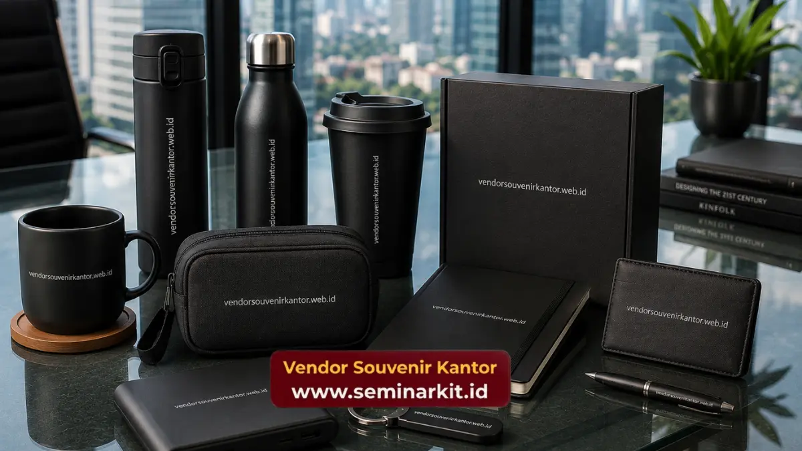

Souvenir kantor murah adalah merchandise korporat yang diproduksi dengan efisiensi biaya tanpa mengorbankan kualitas, cocok untuk kebutuhan hadiah karyawan, klien, maupun acara perusahaan. Jenis populer meliputi tumbler, notebook, dan gift set custom logo. Vendorsouvenirkantor.web.id menyediakan pilihan lengkap dengan harga bersaing.
- Souvenir kantor murah tetap bisa tampil premium jika bahan dan desain dipilih secara tepat.
- Harga dipengaruhi oleh jenis bahan, teknik cetak logo, dan jumlah minimum order.
- Pemesanan dalam jumlah besar umumnya memperoleh harga per unit yang lebih efisien.
- Waktu produksi rata-rata membutuhkan perencanaan agar souvenir siap tepat waktu untuk acara perusahaan.
- Vendorsouvenirkantor.web.id melayani konsultasi kebutuhan souvenir kantor dari skala kecil hingga korporat besar.
Kebutuhan akan souvenir kantor terus meningkat seiring tumbuhnya budaya apresiasi karyawan dan relasi bisnis di lingkungan korporat Indonesia.
Berdasarkan data Asosiasi Industri Promosi dan Merchandise, permintaan produk merchandise korporat tercatat tumbuh signifikan setiap tahun sejak 2023, didorong oleh aktivitas employee engagement dan branding perusahaan.
Tren ini menempatkan souvenir kantor murah sebagai kategori dengan pertumbuhan permintaan tertinggi dibanding kategori merchandise premium, karena fleksibilitas anggaran menjadi prioritas utama divisi HRD dan procurement.
Artikel ini membahas secara menyeluruh apa itu souvenir kantor murah, bagaimana cara memilihnya, faktor yang memengaruhi harga, kesalahan umum yang perlu dihindari, hingga rekomendasi langkah pemesanan yang tepat.
Apa Itu Souvenir Kantor Murah?
Souvenir kantor murah adalah kategori merchandise korporat yang dirancang dengan struktur biaya efisien, biasanya melalui pemilihan bahan alternatif, teknik cetak yang ekonomis, atau pemesanan dalam skala besar, namun tetap mempertahankan standar tampilan profesional.
Istilah "murah" dalam konteks ini tidak identik dengan kualitas rendah. Banyak produsen merchandise mampu menekan biaya produksi melalui efisiensi rantai pasok bahan baku dan proses produksi massal, sehingga harga per unit dapat ditekan tanpa menurunkan daya tahan maupun estetika produk.
Untuk Siapa Souvenir Kantor Murah Digunakan?
Souvenir kantor murah umumnya dibutuhkan oleh divisi HRD untuk apresiasi karyawan, divisi marketing untuk branding pada acara pameran, serta tim procurement untuk hadiah relasi bisnis dan klien.
Segmen ini juga banyak digunakan oleh instansi pemerintah dan lembaga pendidikan untuk kebutuhan seremonial resmi.
Kapan Souvenir Kantor Murah Dibutuhkan?
Kebutuhan souvenir kantor biasanya muncul menjelang acara ulang tahun perusahaan, gathering tahunan, seminar, pelantikan, hingga momen hari besar seperti Lebaran dan Natal.
Perencanaan pemesanan idealnya dilakukan beberapa minggu sebelum acara agar proses produksi dan pengiriman berjalan lancar.
Mengapa Souvenir Kantor Murah Penting bagi Perusahaan?
Souvenir kantor murah penting karena memberikan nilai apresiasi dan branding tanpa membebani anggaran operasional perusahaan, sekaligus menjaga hubungan baik dengan karyawan dan mitra bisnis secara berkelanjutan.
Bagi perusahaan dengan anggaran promosi terbatas, souvenir murah menjadi solusi realistis untuk tetap hadir dalam berbagai momen tanpa mengorbankan konsistensi branding.
Logo perusahaan yang tercetak rapi pada produk sehari-hari seperti tumbler atau notebook dapat berfungsi sebagai media promosi pasif yang terus terlihat oleh penerima dalam jangka panjang.
Apa Manfaat Souvenir Kantor Murah untuk Branding Perusahaan?
Souvenir kantor murah membantu memperkuat visibilitas merek karena digunakan berulang oleh penerima dalam aktivitas sehari-hari, sehingga logo perusahaan terpapar secara konsisten kepada audiens yang lebih luas dibanding media promosi konvensional.
Riset internal dari beberapa penyedia merchandise korporat pada 2025 mencatat bahwa produk fungsional seperti tumbler dan tas jinjing memiliki masa pakai rata-rata lebih dari enam bulan, jauh lebih lama dibanding media promosi cetak seperti brosur yang umumnya langsung dibuang setelah dibaca.
Jenis Souvenir Kantor Murah yang Paling Diminati
Beberapa jenis souvenir kantor murah yang paling diminati perusahaan meliputi tumbler custom logo, notebook dan agenda, gantungan kunci, pouch multifungsi, serta gift set kombinasi yang dikemas menarik untuk acara resmi.
Tumbler dan botol minum tetap menjadi favorit karena fungsinya yang praktis dan daya tahan yang baik untuk penggunaan harian.
Notebook dan alat tulis juga populer sebagai souvenir formal untuk seminar atau pelatihan internal.
Sementara itu, gift set berisi kombinasi beberapa item kecil sering dipilih untuk kebutuhan hampers akhir tahun atau parcel Lebaran korporat.

Bagaimana Memilih Jenis Souvenir yang Sesuai Kebutuhan?
Pemilihan jenis souvenir sebaiknya disesuaikan dengan tujuan acara, target penerima, dan pesan branding yang ingin disampaikan perusahaan.
Untuk acara internal seperti gathering karyawan, item fungsional dan personal seperti tumbler atau totebag lebih disukai. Sementara untuk relasi bisnis dan klien, gift set dengan kemasan lebih formal dan elegan umumnya lebih sesuai karena mencerminkan citra profesional perusahaan.
Faktor yang Memengaruhi Harga Souvenir Kantor Murah
Harga souvenir kantor murah dipengaruhi oleh beberapa faktor utama, yaitu jenis dan kualitas bahan baku, teknik cetak logo yang digunakan, jumlah unit pesanan, tingkat kerumitan desain, serta waktu pengerjaan yang diminta.
Semakin besar jumlah pesanan, umumnya semakin rendah harga per unit karena efisiensi biaya produksi massal.
Teknik cetak seperti sablon cenderung lebih ekonomis dibanding bordir atau laser engraving yang membutuhkan proses tambahan. Pemilihan bahan dasar, misalnya plastik food grade dibanding stainless steel, juga berpengaruh signifikan terhadap struktur harga akhir.
Apakah Jumlah Pesanan Memengaruhi Harga Souvenir Kantor?
Ya, jumlah pesanan sangat memengaruhi harga karena sebagian besar vendor menerapkan sistem harga bertingkat, di mana harga per unit menurun seiring bertambahnya volume pesanan.
Perusahaan yang memesan dalam skala besar, misalnya untuk seluruh karyawan atau ratusan mitra bisnis, umumnya memperoleh penawaran harga khusus dibanding pemesanan dalam jumlah kecil.
Konsultasi kebutuhan volume pesanan kepada tim vendorsouvenirkantor.web.id dapat membantu perusahaan mendapatkan skema harga paling efisien sesuai anggaran.
Cara Kerja Pemesanan Souvenir Kantor Murah
Proses pemesanan souvenir kantor murah umumnya dimulai dari konsultasi kebutuhan, pemilihan produk dan bahan, pengiriman desain logo, proses produksi, quality control, hingga pengiriman produk jadi ke lokasi perusahaan.
Tahapan ini dirancang agar perusahaan mendapatkan hasil akhir yang sesuai ekspektasi tanpa perlu terlibat teknis produksi secara mendalam.
Komunikasi yang jelas mengenai tenggat waktu acara sangat penting agar proses produksi dapat direncanakan dengan matang.
Berapa Lama Waktu Produksi Souvenir Kantor Murah?
Waktu produksi souvenir kantor murah umumnya bervariasi tergantung jenis produk, teknik cetak, dan jumlah pesanan, sehingga perusahaan disarankan melakukan pemesanan jauh sebelum tanggal acara berlangsung.
Produk dengan stok siap dan teknik cetak sederhana seperti sablon umumnya dapat diproses lebih cepat dibanding produk custom penuh yang memerlukan produksi dari nol.
Untuk kepastian jadwal, perusahaan disarankan berkonsultasi langsung mengenai estimasi waktu pengerjaan sesuai kebutuhan acara.
Kesalahan Umum saat Memilih Souvenir Kantor Murah
Beberapa kesalahan umum yang sering terjadi saat memilih souvenir kantor murah meliputi terlalu fokus pada harga terendah tanpa mempertimbangkan kualitas bahan, memesan mendekati tanggal acara, serta mengabaikan konsistensi desain logo dengan identitas merek perusahaan.
Harga yang terlalu rendah terkadang berbanding lurus dengan kualitas bahan yang kurang tahan lama, sehingga souvenir justru cepat rusak dan berdampak negatif terhadap citra perusahaan.
Pemesanan mendadak juga berisiko membuat kualitas hasil kurang maksimal karena waktu produksi yang terburu-buru.
Bagaimana Menghindari Kesalahan dalam Memilih Souvenir Kantor?
Cara menghindari kesalahan tersebut adalah dengan merencanakan pemesanan lebih awal, meminta sampel produk sebelum produksi massal, serta memastikan vendor memiliki rekam jejak dan standar quality control yang jelas.
Meminta contoh material atau mockup desain sebelum produksi penuh dapat membantu perusahaan memastikan hasil akhir sesuai harapan, sekaligus menghindari risiko kerugian akibat kesalahan cetak dalam jumlah besar.
Tips Mendapatkan Souvenir Kantor Murah Berkualitas
Beberapa tips untuk mendapatkan souvenir kantor murah tanpa mengorbankan kualitas antara lain menentukan anggaran di awal, memilih jenis produk fungsional yang sering digunakan, memesan dalam volume yang efisien, serta berkonsultasi langsung dengan vendor berpengalaman.
Menentukan anggaran sejak awal membantu tim procurement menyaring pilihan produk secara lebih efisien.
Produk fungsional cenderung memberikan nilai lebih tinggi karena akan digunakan berulang oleh penerima, sehingga meningkatkan efektivitas branding dibanding produk yang hanya dipajang sekali.
Perusahaan yang ingin mendapatkan penawaran harga terbaik dengan kualitas terjaga dapat langsung berkonsultasi bersama tim vendorsouvenirkantor.web.id, yang siap membantu menyesuaikan pilihan produk dengan anggaran dan kebutuhan acara perusahaan.
Kesimpulan
- Souvenir kantor murah tetap dapat tampil profesional jika bahan, teknik cetak, dan desain dipilih secara cermat.
- Volume pesanan dan waktu pemesanan yang tepat sangat memengaruhi efisiensi harga dan kualitas hasil akhir.
- Hindari memilih souvenir hanya berdasarkan harga terendah tanpa mempertimbangkan daya tahan produk.
- Konsultasi lebih awal dengan vendor berpengalaman membantu perusahaan mendapatkan hasil sesuai anggaran dan tenggat waktu.
- Vendorsouvenirkantor.web.id siap membantu perusahaan Anda mendapatkan souvenir kantor murah berkualitas melalui proses konsultasi dan pemesanan yang mudah.
Jika perusahaan Anda sedang mencari solusi souvenir kantor murah dengan kualitas terjaga dan proses pemesanan yang cepat, tim vendorsouvenirkantor.web.id siap membantu dari tahap konsultasi hingga produk sampai di lokasi Anda.
Kunjungi vendorsouvenirkantor.web.id untuk mendapatkan penawaran terbaik sesuai kebutuhan perusahaan Anda.

Banner promosi: klik gambar untuk langsung terhubung ke WhatsApp tim sales.